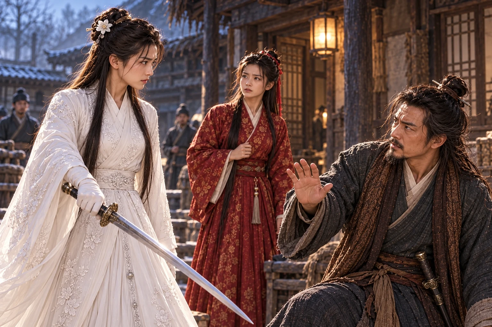

Pagi itu kembali ke jalan tempat keluarga Guo berlindung. Ia tidak hendak menemui . Setelah menitipkan kuda kepada , ia sempat berjalan sampai gerbang, tetapi bayangan Dani yang terluka membuatnya berbalik. Jika benar pemuda itu hendak menikahi , sekurang-kurangnya Fu harus mengetahui kapan lukanya terasa sakit dan bagaimana ia menyembunyikan nyeri di balik tawa.
masih berada di tangannya. Sepanjang perjalanan pendek itu, ia mencoba membayangkan menyerahkannya kepada orang lain. Setiap kali bayangan tersebut menjadi jelas, langkahnya melambat.
Di serambi luar, suara seorang lelaki menyebut namanya.
“Di hadapan para pendekar mereka menyebut pernikahan seolah-olah semuanya baru akan dimulai,” kata . “Padahal sebelum pertemuan itu, mereka sudah bermalam berdua di sebuah gubuk di Zhongnan.”
Xiaolongnü berhenti di balik tiang. Zhen berdiri bersama , dikelilingi beberapa orang yang hendak berangkat membantu penjagaan kota. Kedua pendeta itu singgah setelah mendengar keluarga Guo berpindah kediaman. Di antara pendengar, Guo Fu baru keluar membawa baskom. Nama Dani menahan langkahnya.
“Engkau melihat sendiri?” tanya Fu.
Zhen mengenali putri . Ia tahu perkataannya kini akan sampai ke tempat yang tepat. “Aku melihatnya meraih wajah Dani dan membiarkan pemuda itu mendekat. Pintu mereka kemudian ditutup. Seorang guru tidak menyambut muridnya dengan cara demikian.”
Yang disaksikannya berhenti pada kedekatan itu. Ia telah pergi sebelum malam berlanjut. Namun jeda yang dibiarkannya sesudah berkata-kata membuat para pendengar membayangkan lebih banyak daripada yang dapat diberikannya sebagai kesaksian.
“Jadi, selama ini mereka telah mempermainkan Ayah?” Fu meletakkan baskom. Rasa malu karena kabar perjodohan yang didengarnya dari kedua Wu belum reda; sekarang ia merasa menemukan sebab lain untuk marah.
Zhao mengelus ujung lengan bajunya. “Murid yang berani menentang gurunya sendiri tentu tidak sukar melupakan tata susila. Saudara Zhen pernah mencoba menegurnya, tetapi dibalas dengan pukulan.”
“Dani memukulnya karena ia mendekatiku ketika aku tidak dapat bergerak.”
Xiaolongnü keluar dari balik tiang. Suaranya tidak tinggi, tetapi percakapan di serambi segera berhenti. Zhen mundur setengah langkah. Fu memandang pedang di tangan perempuan itu, kemudian wajahnya yang putih dan tenang.
“Katakan juga bagian itu,” lanjut Xiaolongnü. “ menahan tubuhku. Aku tidak memanggilmu, dan aku tidak menghendaki tanganmu menyentuhku. Dani datang untuk menolong. Mengapa engkau tidak menceritakan apa yang hendak kaulakukan sebelum ia memukulmu?”
Zhen membuka mulut. Nama perguruannya, pendapat orang-orang, dan wajah gurunya seakan berdesakan di tenggorokan. Ia ingin membantah tanpa mengucapkan kebohongan yang dapat segera dibuka perempuan di depannya.
“Aku datang karena mengira Nona memerlukan pertolongan.”
“Aku memang memerlukan pertolongan. Sebab itu aku memandang pintu ketika datang.” Tatapan tidak bergeser. “Engkau melihat ketakutanku. Jangan menyebutnya sesuatu yang lain.”
Seorang lelaki di serambi menoleh kepada kawannya. Bisik mereka membuat wajah Zhen memerah. Perempuan yang hendak dicelanya kini memaksanya berdiri di dalam cerita yang sengaja dipotongnya sendiri.
Zhen menatap Xiaolongnü dengan kepahitan yang tidak lagi menyerupai nasihat pendeta. “Aku bersalah karena mendekatimu. Tetapi apakah itu membuat hubunganmu dengan Dani menjadi benar? Engkau gurunya!”
“Ia orang yang hendak kukawini.” Xiaolongnü menggenggam sarung pedangnya lebih erat. Menyebut kehendak itu terasa menyakitkan setelah apa yang didengarnya malam tadi. “Orang lain boleh menentangku. Engkau tidak berhak memakai namanya untuk menutupi perbuatanmu.”
Fu menyela, terlalu tergesa untuk memahami perbedaan keduanya. “Jadi perkataannya tentang kalian di gubuk itu benar?”
Xiaolongnü berpaling kepadanya. Ia tidak merasa perlu menyangkal cintanya, tetapi mendengar kelembutan yang pernah dimilikinya dijadikan bahan celaan membuat dadanya sesak. “Aku mempercayakan diriku kepada Dani. Aku tidak pernah mempercayakannya kepada pendeta ini.”
Fu menundukkan mata. Jawaban itu tidak menenteramkannya. Ia telah dibesarkan di tengah orang yang menempatkan guru setara orang tua; pengakuan tersebut terdengar seperti pembenaran atas sesuatu yang seharusnya memalukan. Dalam sakit hatinya sendiri, ia tidak berusaha memahami lebih jauh.
Zhen melihat perubahan wajah Fu dan meraih kesempatan terakhir. “Dengarlah. Ia sendiri tidak menyangkal. Mengapa hanya aku yang harus menanggung cela?”
keluar dari sarungnya.
“Karena aku tidak akan membiarkanmu menyakiti Dani sekali lagi,” kata Xiaolongnü.

Zhao menarik Zhen ke belakang, lalu mendorong bangku melintang di serambi. Para pendengar berpencar; seorang terjatuh tepat di jalur bilah Xiaolongnü. Ia menahan serangan agar tidak mengenai orang itu. Kedua pendeta menggunakan sela tersebut untuk melompati pagar samping.
“Kembalilah ke !” desis Zhao kepada kawannya. “Jangan tunggu ia menebasmu di sini!”
Xiaolongnü melewati bangku. Sebelum menyusul, ia menoleh kepada Fu. “Dani sedang terluka. Jagalah dia.” Permintaan itu keluar meskipun hatinya menolak menyerahkan pemuda tersebut. Kemudian ia berlari mengikuti kedua pendeta, membawa Pedang Perempuan yang belum sanggup diberikannya.
Fu tertinggal di serambi. Ia hendak mengatakan bahwa tidak ada pernikahan yang disetujuinya, tetapi Xiaolongnü sudah menghilang. Yang tersisa justru rasa terhina: Dani mengaku akan menjadi suaminya tanpa meminta persetujuannya, sementara perempuan yang dicintainya datang menyuruh Fu merawatnya.
terbangun oleh bunyi daun pintu. Di dekat bantalnya tersandar ; di bawah ranjang, buntalan ibunya belum dibuka. telah dipanggil ke kamar kedua putranya. Tubuh Dani terasa dingin dan berat, tetapi ia masih dapat mengangkat kepala ketika melihat Fu masuk.
“Nona Guo datang sepagi ini. Rupanya obat yang kubayar dengan celaan kemarin belum cukup pahit.”
Fu tidak tersenyum. Ia menutup pintu, lalu berdiri di hadapannya. “Apa yang kaukatakan kepada kedua kakak Wu tentang aku?”
Senyum Dani menghilang sedikit. Ia sudah menduga kebohongan itu akan ditagih, hanya tidak secepat ini. “Mereka hendak saling membunuh. Aku mengatakan sesuatu supaya kemarahan mereka beralih kepadaku.”
“Katakan perkataanmu itu. Jangan ceritakan kepadaku apa yang hendak kaulakukan.”
Dani menatap tepi selimut. “Aku mengatakan Paman dan telah membicarakan kembali perjodohan kita, dan kali ini aku menerimanya.”
“Menerimanya?” Suara Fu bergetar. “Seolah-olah aku duduk menunggu kapan engkau sudi menerima! Ayah pernah menawarimu, engkau menolak di hadapan semua orang. Sekarang namaku kaubawa lagi ketika engkau memerlukannya.”
“Aku tahu perkataan itu menyakiti nama baikmu.” Dani mengangkat wajah. “Aku akan menjelaskan kepada mereka bahwa semuanya dusta. Aku tidak akan membiarkanmu menanggungnya.”
“Engkau juga berkata aku menceritakan percakapan kami kepadamu. Mereka mengulanginya satu per satu kepadaku tadi. Sejak kapan aku mengadu kepadamu tentang siapa yang hendak kupilih?”
Dani tidak segera menjawab. Ingatan tentang kedua Wu yang mulai saling melindungi semalam sempat membuatnya puas; sekarang ia mendengar sisi lain dari siasat yang sama. Ia telah menjadikan kehormatan seorang gadis alat untuk memenangkan pertengkaran.
“Aku mendengar kalian dari jalan taman,” katanya. “Aku memakai perkataan itu supaya mereka percaya. Dalam hal ini aku bersalah kepadamu.”
Fu menunggunya menambahkan sesuatu. Bukan alasan lain; barangkali sedikit keraguan ketika mengatakan bahwa perjodohan itu hanya dusta. Namun Dani tampak ingin secepatnya membereskan perkara tersebut, seolah seluruh kesulitannya selesai bila ia menerangkan bahwa dirinya tidak menginginkan Fu.
“Begitu mudah engkau mengatakannya sekarang.” Fu mengusap pipi dengan gerakan marah. “Kedua kakak Wu hampir mati. Ayah terluka. hilang. Setiap orang harus membereskan akibat kepandaianmu berkata-kata!”
Wajah Dani menegang. “Kau boleh menuntutku karena dusta itu. Tetapi jangan menyebut darah yang tertumpah semalam hanya akibat perkataanku.”
“Lalu siapa yang membawa Polu keluar? Siapa yang menjaga adikku ketika merampasnya?”
“Bibi membawanya menjauhi kebakaran. Ketika kami hendak mengembalikannya, menyerang. Li Mochou mengambilnya dalam kekacauan itu. Aku mengejar sampai menemukan kedua kakak Wu sedang berkelahi.”
“Dan mereka kauselamatkan, tetapi adikku tidak!”
menarik napas. Tuduhan itu melukai karena bagian terakhirnya benar: Polu belum pulang. Ia tidak dapat memperlihatkan bayi yang selamat sebagai jawaban. “Kalau kutinggalkan mereka, Paman Wu akan mengubur dua putranya. Aku tidak sanggup melakukannya.”
“Engkau selalu mempunyai alasan untuk memilih siapa yang harus ditolong.” Fu mencengkeram ujung lengan bajunya. “Ibuku sedang mencari bayi yang bahkan belum sempat dikenalnya. Apakah engkau memikirkan itu?”
“Aku memikirkannya sejak tangis Polu tidak terdengar lagi.” Suara Dani merendah. “Bila tubuhku sanggup berdiri, aku akan mencarinya. Tetapi jangan menuduh Bibi menyerahkannya kepada Li Mochou.”
Nama Bibi membuat Fu mengangkat dagu. Ia datang untuk menuntut pemulihan nama baiknya; kini sekali lagi ia mendengar betapa cepat Dani membela perempuan lain. Kepedulian yang ditunjukkannya ketika membawa air semalam terasa memalukan di hadapan pembelaan itu.
“Tentu gurumu tidak pernah bersalah di matamu. Engkau boleh mempermalukanku untuk menolong orang, dan ia boleh melupakan tata susila karena mencintaimu.”
“Perkaramu denganku belum selesai. Tidak perlu menyeretnya ke sini.”
“Ia sudah datang sendiri ke sini.” Fu menikmati perubahan mendadak pada wajah Dani, lalu membenci dirinya karena menikmatinya. “Pagi tadi ia berdiri di depan orang-orang. mengatakan apa yang dilihatnya di Zhongnan. Gurumu tidak menyangkal.”
Dani duduk terlalu cepat. Nyeri merambat dari dada sampai siku. “Bibi ada di sini? Ke mana ia pergi?”
“Mengejar kedua pendeta itu. Mungkin ia hendak menutup mulut mereka sebelum lebih banyak orang mendengar.”
“Zhen hendak mencelakainya ketika tubuhnya . Aku yang menghalanginya.” Dani menahan tepi ranjang. “Kalau pendeta itu memakai kejadian tersebut untuk mencela Bibi, ia sedang menutupi dosanya sendiri.”
Fu terdiam sesaat. Perkataan itu sesuai dengan bantahan . Ia sempat dapat berhenti di sana, kembali kepada kebohongan yang memang menjadi kesalahan Dani. Namun kemarahan dan harga dirinya mendorongnya melewati kesempatan tersebut.
“Aku mendengarnya berkata engkau orang yang hendak dikawininya,” kata Fu. “Lalu ia menyuruhku menjaga engkau. Mengapa aku harus menerima pemuda yang sudah dibawanya melanggar hubungan guru dan murid?”
Dani menatapnya. “Ia memintamu menjagaku?”
Fu menyangka pertanyaan itu pura-pura tidak mengerti. “Jangan harap aku akan berterima kasih atas kemurahan hatinya. Kalian telah hidup seperti suami istri, kemudian namaku hendak dipakai supaya dunia menganggapmu terhormat. Gurumu itu sungguh tidak tahu malu.”
Tamparan meledak di tengah perkataan itu. Kepala Fu terempas ke samping; kursi di belakangnya bergeser keras. Dani sudah bangkit setengah badan, matanya merah oleh amarah. Semua penghinaan terhadap dirinya tadi masih dapat ditelannya. Nama Xiaolongnü membuat kesabarannya putus.
Fu memegang pipi yang panas. Sesaat ia bahkan tidak dapat mendengar apa-apa selain denging di telinganya. Pemuda itu memukulnya. Di rumah ayahnya sendiri, di hadapannya sendiri, ia masih lebih membela perempuan itu!
“Engkau boleh menghinaku sesukamu!” bentak Dani. “Demi Paman dan , aku masih menahan diri. Tetapi sekali lagi kaucela Bibiku, jangan harap aku akan berdiam saja!”
Fu tersentak oleh bentakan itu. Malu dan sakit menyulut seluruh kemarahannya; ia tidak lagi memikirkan luka pemuda di depan ranjang. Jemarinya sudah mencengkeram gagang pedang sebelum air mata di pipinya sempat jatuh.
“Engkau berani memukulku di rumah ayahku!”
Pedang Fu menyambar lehernya. Dani memiringkan kepala, menangkap pergelangan Fu, lalu merenggut senjata itu dengan sentakan pendek. Bilahnya jatuh berkelontangan. Ia hendak melangkah pergi, tetapi pandangannya mendadak gelap; racun dan darah yang hilang semalam belum membiarkannya mengerahkan tenaga sesuka hati.
“Minggir!” Dani menahan tepi ranjang. “Aku akan pergi dari rumahmu!” Napasnya memburu. Penghinaan terhadap Xiaolongnü masih berdengung di kepalanya; ia bahkan belum melihat ke mana tangan Fu bergerak.
Fu menyambar dari sisi bantal. Bilahnya terhunus dalam satu tarikan. Dani baru sempat memutar tubuh ketika cahaya dingin itu turun ke arah kepalanya.
Kaki Dani kehilangan tenaga. Ia jatuh terduduk, lengan kiri menahan tubuh, dan tangan kanannya terangkat melindungi wajah. Fu sedang mengerahkan seluruh kekuatannya. Tak ada lagi jarak untuk merampas pergelangan itu.
Bilah Pedang Budiman melintas. Lengan kanan Dani putus di atas siku.
Jerit Dani merobek kamar. Ia terhempas ke sisi ranjang, mulut terbuka menahan nyeri yang datang sekaligus. Darah membasahi lantai. Dengan mata membelalak ia mencari lengannya—sesuatu yang sedetik lalu masih menangkis pedang, kini tidak menjawab kehendaknya lagi.
Fu membeku. Pedang Budiman masih berada dalam genggamannya; percikan merah membasahi lengan baju dan pipinya. Ia menatap Dani, lalu bilah itu, seakan baru melihat apa yang dapat dilakukan tangannya sendiri. “Aku… aku tidak…”
“!” Dani meraung. Ia hendak menerjangnya, tetapi tubuhnya rebah kembali. Tangannya yang kiri mencengkeram seprai; air mata mengalir tanpa dapat ditahan. “Bibiku tidak pernah mencelakakanmu! Mengapa… mengapa kau…” Suaranya pecah menjadi jerit kesakitan.
Fu menjerit pula dan berlari keluar. Ia tidak menyarungkan pedang, tidak mengambil kain, bahkan tidak sadar bahwa darah di tangannya membekas pada daun pintu. Isaknya terdengar sepanjang serambi menuju kamar orang tuanya.
Huang Rong sedang memberikan obat kepada ketika pintu terbuka keras. Fu terhuyung masuk dengan wajah penuh air mata. Pedang telanjang di tangannya masih menetes. Guo Jing langsung tegak; sesaat ia menyangka musuh telah menerobos rumah.
“Fu’er! Darah siapa itu?” seru Guo Jing. Fu membuka mulut beberapa kali sebelum berhasil menyebut, “… Ayah, Dani…” Huang Rong meraih pergelangannya, menjauhkan mata pedang dari tubuh mereka.
Guo Jing sudah turun dari ranjang. “Apa yang terjadi pada Dani? Katakan!” Suaranya membuat Fu menggigil. Ia mencoba menelan tangis, tetapi perkataan yang keluar justru semakin tidak beraturan.
“Aku menebasnya… tangannya… tangannya…” Fu menunduk, seakan lantai dapat menyembunyikan apa yang baru diucapkannya. Wajah Guo Jing berubah pucat.
Mangkuk obat terjatuh. Guo Jing menerjang pintu tanpa menunggu sandal terpasang sempurna. menarik dari tangan Fu sebelum gadis itu jatuh berlutut. Percikan darah di baju merah putrinya membuat tangannya sendiri terasa dingin.

“Lekas panggil orang! Bawa obat luka!” Suara Guo Jing mengguncang serambi. “Dani! Paman datang! Darahnya sudah dihentikan atau belum?”
Dani mendengar teriakan itu. Jemari kirinya baru selesai bahu; dengan gigi ia merobek kain yang ditarik dari ranjang, lalu menekannya ke luka. Napasnya terputus-putus. Saat suara Guo Jing semakin dekat, hanya satu pikiran memenuhi kepalanya: Aku tidak mau melihatnya. Jangan biarkan ia menahanku di sini.
Ia menyambar buntalan ibunya, mengaitkan talinya pada bahu kiri, lalu menjatuhkan tubuh melewati jendela samping. Lututnya membentur tanah. Ia bangkit lagi dengan tangan kiri, meninggalkan jejak darah di dinding. Pedang Fu tetap di kamar; Pedang Budiman sudah dibawa orang yang memutus lengannya.
Di halaman belakang seekor kuda tertambat pada tiang. Dani melepaskan tali dengan tangan gemetar dan memaksakan tubuh ke pelana. Ia tidak tahu siapa pemiliknya. Dari rumah terdengar namanya dipanggil lagi; ia menuntun kuda melewati pintu kebun yang terbuka, baru memacunya setelah terhalang tembok.
Lorong belakang itu kosong. Dani mengambil jalan memutar, menunduk di atas pelana, semakin jauh dari suara pencarian. Tidak seorang pun melihatnya keluar dari kamar ataupun meninggalkan kediaman Guo. Ketika ia akhirnya mencapai jalan di luar kota, orang-orang yang mencarinya bahkan belum mengetahui apakah ia pergi dengan berjalan kaki.
Guo Jing masuk ke kamar dan berhenti mendadak. Ranjang kosong. Darah membasahi seprai dan lantai, lalu berjejak menuju jendela. Ia memanggil Dani sekali lagi, kini hampir berbisik. Tidak ada sahutan.
“Cari dia!” Guo Jing berbalik kepada orang-orang yang menyusul. “Ia terluka berat. Bawa tandu dan obat. Jangan seorang pun pulang sebelum mendapat kabar!”
Huang Rong tiba di ambang pintu. Begitu melihat darah di lantai, ia mencengkeram kusen. Ia telah mendengar pengakuan Fu, tetapi pengakuan itu belum membuatnya siap melihat kamar yang ditinggalkan Dani.
“Fu telah memutus lengannya!” Guo Jing berkata dengan suara bergetar, lalu menghantam tiang ranjang. Kayu keras itu pecah; kelambu jatuh menutupi kasur kosong. “Anak itu menyelamatkan ayahnya, dan ini balasan yang diberikannya!”
Huang Rong tidak membantah. melompat keluar melalui jendela, mengikuti darah di kebun. Luka dalamnya kembali nyeri, tetapi ia terus berjalan. Di tanah berbatu dekat pintu belakang jejak itu terputus. Tidak ada orang yang dapat menunjukkan arah kepergian Dani.
dan para penolong berpencar menuju gerbang. datang dari kamar putra-putranya; setelah mendengar kabar, ia pun bergegas menyusul pencarian. Suara orang berlari memenuhi rumah, sedangkan kamar semakin sunyi.
“Bawa Fu menghadapku ketika aku kembali,” pesan Guo Jing kepada seorang pelayan sebelum meneruskan pencarian. Huang Rong mendengarnya dari serambi. Ia mengenal kemurkaan suaminya; untuk pertama kali sejak Fu lahir, ia takut membayangkan ayah dan anak itu berada dalam satu kamar.
Fu masih meringkuk dekat ranjang orang tuanya. Ketika Huang Rong kembali, gadis itu merangkak mendekat dan memeluk kaki ibunya. “Ibu, ia akan mati? Aku tidak bermaksud… Ibu, jangan biarkan Ayah…”
menyimpan di lemari tinggi, lalu mengangkat Fu. Ia tidak menjawab pertanyaan putrinya. Di luar, Guo Jing masih memanggil orang untuk mencari Dani; Huang Rong menutupkan jubah pada baju Fu yang berlumur darah.
“Ikut Ibu lewat belakang,” bisiknya. “Jangan berkata apa-apa dahulu.” Fu menurut dengan langkah sempoyongan. Huang Rong belum berani mempertemukannya dengan Guo Jing, dan belum sanggup menyerahkan putrinya kepada hukuman yang dapat dibayangkannya.
Ibu dan anak itu menyelinap keluar sementara para pencari berpencar ke segala penjuru. Huang Rong membawa Fu menuju sebuah gubuk penyimpan jerami di luar kota. Guo Jing belum mengetahui tempat itu. Setiap kali Fu hendak menanyakan ayahnya, Huang Rong hanya mempererat genggaman dan menyuruhnya berjalan.
Di dalam gubuk, Fu duduk di belakang ikatan kayu. Huang Rong membasahi sehelai kain dan membersihkan pipinya. Darah itu sudah mengering, tetapi setiap kali kain diangkat, Fu kembali melihat lengan Dani terkulai di hadapannya.
“Ayah akan datang kemari, Ibu?” tanya Fu dengan suara kecil.
“Ayahmu sedang mencari Dani.” Huang Rong menahan dagu putrinya agar tidak terus menunduk. “Sekarang ceritakan semuanya. Jangan sembunyikan sepatah pun dariku.”
Fu menceritakan dusta restu, perkara , dan tamparan di pipinya. Pada mulanya ia masih berusaha menyalahkan Dani. Ketika sampai kepada penghinaan terhadap , suaranya mengecil; ia teringat betapa mudahnya tadi ia memilih kata yang paling melukai.
“Engkau melihat ia tidak sanggup berdiri?” tanya Huang Rong.
Fu mengangguk kecil.
“Lalu engkau tetap mengayunkannya?”
“Aku sangat marah, Ibu. Aku tidak mengira…” Fu menutupi wajah. “Aku tidak mengira akan menjadi begitu.”
Huang Rong menurunkan tangan putrinya. “Ia telah membawa ayahmu pulang. Ia menolong kedua kakak Wu dengan tubuh yang sudah keracunan. Fu’er, bagaimana engkau sampai hati mengayunkan pedang kepadanya?”
Fu menangis semakin keras. “Aku tahu ia lemah. Aku melihatnya jatuh… tetapi aku masih menebas.” Kali ini ia tidak menyambung pengakuannya dengan kesalahan . Kedua tangannya mencengkeram pakaian ibunya.
“Jangan bawa aku kepada Ayah malam ini. Ibu, aku mohon.”
memeluknya. Polu belum ditemukan; ia telah kehilangan jejak seorang anak dan kini takut kehilangan yang lain karena perbuatan anak itu sendiri. Namun ketika menatap tangan Fu yang utuh, bayangan darah di kamar Dani kembali membuatnya menutup mata.
“Tinggallah di sini sampai Ibu kembali,” kata Huang Rong. “Jangan menyalakan api atau keluar menemui orang. Ibu masih harus mencari Dani.” Ia menyelimuti Fu dengan jubahnya. “Aku menyembunyikanmu, tetapi kesalahanmu tidak menjadi hilang karenanya.”
Huang Rong meninggalkan gubuk sebelum petang berakhir. Ia akan kembali kepada pencarian dan rumahnya tanpa memberi tahu di mana Fu berada. Perlindungan itu belum menjadi pertengkaran terbuka; untuk sementara hanya Huang Rong yang mengetahui seberapa besar perkara yang ditundanya.
Menjelang malam Dani telah kehilangan kudanya. Ketika ia turun untuk mengencangkan pembalut, tambatan yang dibuat dengan satu tangan terlepas. Ia hanya dapat memandang hewan itu menjauh. Buntalan ibunya masih tersilang pada bahu kiri; ia memeluknya sesaat sebelum menyeret kaki menyusuri jalan tebing.
Ia mencoba meraih tali buntalan dengan tangan yang sudah tidak ada. Gerak yang tidak sampai itu membuatnya menunduk lama. Tangan yang mengayun pedang bersama Xiaolongnü, menarik Paman Guo dari tembok, dan menggenggam jari ayah angkatnya di Huashan tidak akan kembali hanya karena ia masih dapat mengingat beratnya.
“Bibi, aku belum menikahi siapa pun,” bisiknya.
Di bawah tebing sungai bergemuruh, membesar oleh hujan di hulu. Dani mengikuti jalurnya dengan pandangan kabur. Ia harus menemukan jalan menuju Zhongnan, lalu menjelaskan semuanya kepada . Ia baru mengangkat kaki ketika bunyi kipas terbuka terdengar dari tikungan.
“Dani Moan. Aku hampir tidak mengenalimu.”
berdiri melintang, kipas besinya terbuka di depan dada. Ia baru kembali dari pengintaian jalan di luar Xiangyang. Senyum yang mula-mula sekadar mengejek berubah ketika matanya sampai pada pembalut di bahu kanan Dani. Ia mendekat satu langkah, memastikan pemuda itu benar-benar sendirian.
“Siapa yang bermurah hati meninggalkan separuh pekerjaan untukku?”
Dani meraih batu di sisi jalan dengan tangan kiri. “Pangeran masih perlu menanyakan siapa lawannya sebelum berani mendekat?”
Kipas menutup. Dani melempar batu itu ke wajah Huodu dan menerjang ke sisi dalam tebing. Geraknya masih cepat, tetapi napas yang hendak dihimpunnya putus oleh nyeri. Huodu menepis batu, berputar, lalu menghantam bahu kiri Dani dengan gagang kipas. Pemuda itu tersungkur sebelum sempat lewat.
Huodu menarik sebilah belati dari pinggang. Ketika berusaha bangkit, ujungnya menusuk sisi tubuh di bawah rusuk. Udara seakan berhenti di dada Dani. Ia mencengkeram pergelangan Huodu, menahan tusukan itu masuk lebih jauh, tetapi darah telah membasahi jemarinya.
“Ketika membawa Guo Jing keluar dari perkemahan kami, kau tidak mengira akan bertemu denganku dalam keadaan begini, bukan?” Huodu merenggut belatinya. “Katakan kepada gurumu di alam sana: lain kali pilihlah murid yang lebih pandai menjaga diri.”
Dani menghantamkan dahinya ke wajah Huodu. Pangeran itu terhuyung sambil mengumpat. Namun sebelum Dani dapat beralih, kaki Huodu menghunjam pinggangnya. Tanah di bawah tumit Dani runtuh; tubuhnya terlempar melewati bibir tebing.
Tangan kirinya sempat menangkap akar. Sentakan itu membuka kembali nyeri di seluruh tubuh. Dani menggantung di atas kegelapan, buntalan ibunya tertekan pada dada, sementara sungai meraung jauh di bawah kaki. Huodu berjongkok di tepi. Darah dari hidungnya menetes ke atas daun.

“Masih hendak memanjat?”
menyabet akar yang menjadi tumpuannya. Dani melihat serat-serat itu putus satu demi satu. Ia hendak mengerahkan tenaga, tetapi jari-jarinya telah licin oleh darah. Pada tarikan berikutnya akar terlepas bersama tanah.
Angin menghantam wajahnya. Dani tidak sempat menjerit ketika tubuhnya menembus cabang yang menjorok dari dinding tebing, lalu jatuh ke dalam sungai. Air menutup kepala, menariknya berputar; kaki dan punggungnya membentur sesuatu yang keras. Tangan kiri meraih apa saja dan tersangkut pada cabang sebatang kayu hanyut.
Huodu menunggu di atas sampai lingkaran buih lenyap. Tidak tampak kepala yang muncul ataupun seseorang yang memanjat tepian. Dengan luka dan racun sebanyak itu, satu sungai deras lebih dari cukup untuk menyelesaikan pekerjaannya. Ia membersihkan belati, lalu berbalik untuk membawa kabar kepada gurunya.
Jauh di bawah, jari Dani masih terselip di cabang kayu. Kesadarannya padam sebelum arus membawanya melewati tikungan. Malam menutup sungai; tidak ada orang di kediaman Guo yang mengetahui ke mana ia telah pergi.